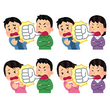
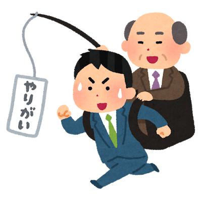
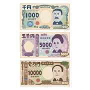

特徴と魅力

いろいろな言葉の暴力
精神的に傷つく発言をして相手に苦痛を与えて（モラハラをして）いる男女のイラストです。

やりがい搾取
やりがいという言葉に操られているスーツを着た男性会社員のイラストです。
食べる青い鳥
他人の言葉を自分の言葉のようにTwitter上に公開するパクリツイート、いわゆる「パクツイ」のイラストです。

いろいろな新紙幣
北里柴三郎が描かれた1000円（千円）紙幣、津田梅子の5000円（五千円）紙幣、渋沢栄一の10000円（一万円・壱万円）紙幣など、2024年7月に発行された新しい日本のお札のイラストです。
上記のイラストのように、話題になった事象やことがらも、いらすとやでは常に更新され続け、イラストになっている。これからの世間のトレンドがどのようにいらすとやに反映されていくか今後にも注目していきたい。